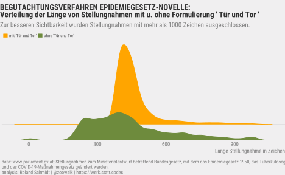
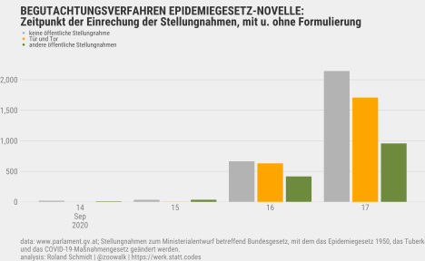
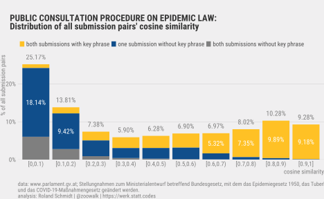
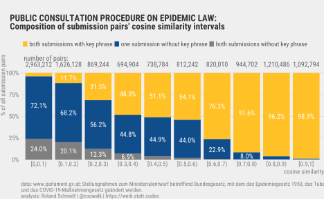
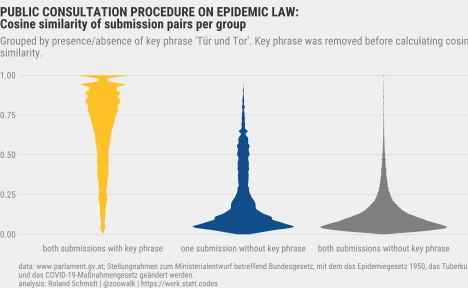
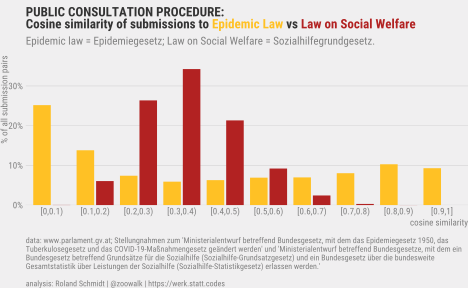

Setup
Code: Load packages
library(tidyverse)
library(here)
library(extrafont)
loadfonts(device = "win", quiet = T)
library(hrbrthemes)
hrbrthemes::update_geom_font_defaults(
family = "Roboto Condensed",
size = 3.5,
color = "grey50"
)
library(scales)
library(knitr)
library(paletteer)
library(ggtext)
library(glue)
library(pdftools)
library(rvest)
library(janitor)
library(patchwork)
library(svglite)
library(countrycode)
library(tictoc)
library(furrr)
library(gt)
library(reactable)
plan(multisession, workers = 3)
Code: Define rmarkdown options
# knit_hooks$set(wrap = function(before, options, envir) {
# if (before) {
# paste0("<", options$wrap, ">")
# } else {
# paste0("</", options$wrap, ">")
# }
# })
knitr::opts_chunk$set(
fig.align = "left",
message = FALSE,
warning = FALSE,
dev = "svglite",
# dev.args = list(type = "CairoPNG"),
dpi = 300,
out.width = "100%"
)
options(width = 180, dplyr.width = 150)
Code: Define plot theme, party colors, caption
plot_bg_color <- readr::read_file(file=here::here("theme.css")) %>%
str_extract(., regex("(?<=background-color:).*?(?=;)")) %>% str_trim()
theme_post <- function() {
hrbrthemes::theme_ipsum_rc() +
theme(
plot.background = element_rect(fill = plot_bg_color, color=NA),
panel.background = element_rect(fill = plot_bg_color, color=NA),
#panel.border = element_rect(colour = plot_bg_color, fill=NA),
#plot.border = element_rect(colour = plot_bg_color, fill=NA),
plot.margin = margin(l = 0,
t = 0.25,
unit = "cm"),
plot.title = element_markdown(
color = "grey20",
face = "bold",
margin = margin(l = 0, unit = "cm"),
size = 13
),
plot.title.position = "plot",
plot.subtitle = element_text(
color = "grey50",
margin = margin(t = 0.2, b = 0.3, unit = "cm"),
size = 11
),
plot.caption = element_text(
color = "grey50",
size = 8,
hjust = c(0)
),
plot.caption.position = "panel",
axis.title.x = element_text(
angle = 0,
color = "grey50",
hjust = 1
),
axis.text.x = element_text(
size = 9,
color = "grey50"
),
axis.title.y = element_blank(),
axis.text.y = element_text(
size = 9,
color = "grey50"
),
panel.grid.minor.x = element_blank(),
panel.grid.major.x = element_blank(),
panel.grid.minor.y = element_blank(),
panel.spacing = unit(0.25, "cm"),
panel.spacing.y = unit(0.25, "cm"),
strip.text = element_text(
angle = 0,
size = 9,
vjust = 1,
face = "bold"
),
legend.title = element_text(
color = "grey30",
face = "bold",
vjust = 1,
size = 7
),
legend.text = element_text(
size = 7,
color = "grey30"
),
legend.justification = "left",
legend.box = "horizontal", # arrangement of multiple legends
legend.direction = "vertical",
legend.margin = margin(l = 0, t = 0, unit = "cm"),
legend.spacing.y = unit(0.07, units = "cm"),
legend.text.align = 0,
legend.box.just = "top",
legend.key.height = unit(0.2, "line"),
legend.key.width = unit(0.5, "line"),
text = element_text(size = 5)
)
}
data_date <- format(Sys.Date(), "%d %b %Y")
Context
Austria’s government tabled about three months ago an amendment to the country’s epidemic law. The amendment was largely a reaction to the shortcomings of the law dating from 1950 when confronted with the current Covid crisis as well as a recent ruling of Austria’s Constitutional Court which declared several measures passed by the government as violating the constitution. Hence, the government proposed the amendment.
While there would be a lot to say about the latent tension between civic rights and a state’s obligation to curtail an epidemic or the thin line between legitimate restrictions and excessive infringements, this post will deal with the public submissions to the government’s amendment bill. In short and crude terms, the legislative process in Austria provides the opportunity for citizens, NGOs, expert bodies etc to file submissions in which they can raise their concerns as to the (draft) version of the bill before it will be debated in parliament. So, at least in theory, it’s an avenue for the government to solicit input from the public at large.
What caught my eye, or better my ears, was a related radio news report which mentioned something along the lines that the submissions to the amendment reached a) a record number and b) that a considerable number of submissions were similar in their wording.
I guess the former is indicative for the fundamental issues which the amendment touches and the overall somewhat ‘edgy’, not to say polarized atmosphere when it comes to Corona. The latter point, though, the similarity of submissions’ wording, puzzled me a bit. What the similarity of the wording effectively means is the use of some kind of template by those filing a submission. In this regard, the news report mentioned that there have been some pertaining calls on social media channels to oppose the bill, possibly also including the provision of a template text.
It was this context which made me curious about the extent of the matter. At least curious enough to have an ‘empirical’ look at it with R.
So I went to the a) parliament’s website which provides a record of received submissions, b) extracted the weblinks to all those submissions of which the text is public, c) download the pertaining pdfs, d) extracted their content, and e) finally checked for their similarity. As for the last point, I can gladly report that I learned something here and my approach changed a bit as I moved along. Hence, the blog post somewhat mirrors this process.
When it comes to similarity, my first attempt was to simply look at the the recurrence of a distinct phrase which I repeatedly noticed while randomly glancing through some of the submissions. The formulation is Tür und Tor which means something like ‘(to open) the (flood)gates’. I guess it’s safe to assume that those submissions articulated severe misgivings about the amendment.
As I’ll show below, while this approach is already somewhat informative since it reveals a pervasive use of a rather distinct phrase and hence points towards the use of text template, it is rather inductive and likely to suffer from omissions of other, possibly even more re-current phrases. Furthermore, simply looking at one distinct phrase is likely to be a rather ‘fragile’ indicator. Only a minor, effectively non-substantive modification of the wording would result in missing out on similar submissions.
To make a long story short, this issue introduced me to the world of quantitative text analysis as provided by the powerful quanteda package. Admittedly, I am only starting to scratch the surface here, but hopefully deep enough to legitimately include it in this post. So, enough of context and waffling. In media R(es).
Get data
Links to submission subpages
The list of submissions filed for the amendment is provided here at the Parliament’s website. To extract the links to the sub-pages which include the links to individual texts, I make us of the provided RSS feed. From there I extract the relevant elements and combine them to one dataframe containing the name of the person/institution filing a submission, the submission’s date, and the link to the sub-page.
Code: get links to submission sub-pages
link_rss_all_submissions <- "https://www.parlament.gv.at/PAKT/VHG/XXVII/ME/ME_00055/filter.psp?view=RSS&jsMode=&xdocumentUri=&filterJq=&view=&GP=XXVII&ITYP=ME&INR=55&SUCH=&listeId=142&FBEZ=FP_142"
data <- xml2::read_xml(link_rss_all_submissions)
#get link to subpages with link to submissions
df_submission_pages_link <- data %>%
xml2::xml_find_all("//link") %>%
html_text() %>%
enframe(.,
name="id",
value="link_single_submission_page") %>%
mutate(link_single_submission_page=str_squish(link_single_submission_page)) %>%
filter(id>2) #removes first two rows which don't include data on submissions
#get title
df_submission_pages_name <- data %>%
xml2::xml_find_all("//title") %>%
html_text() %>%
enframe(.,
name="id",
value="title") %>%
mutate(name=str_extract(title, regex("(?<=\\>).*(?=\\<)"))) %>%
filter(id>2) %>%
select(-title)
#get publication date
df_submission_pages_pub_date <- data %>%
xml2::xml_find_all("//pubDate") %>%
html_text() %>%
enframe(.,
name="id",
value="date") %>%
mutate(date=date %>% str_squish() %>% lubridate::dmy_hms(., tz="Europe/Vienna"))
#combine to one dataframe
df_submission <- bind_cols(
df_submission_pages_name,
df_submission_pages_pub_date,
df_submission_pages_link,
) %>%
select(-contains("id"))
As it turns out, there were 6,670 submissions to the amendment in total.
preservec27af1992c06b789
Notice that there are several submissions which state ‘Keine öffentliche Stellungnahme’ (no public statement) as a name. Hence, we will not be able to analyse the text of all submissions, but only of those which are made public. How many are there? Let’s see:
Code: identify public and non-public submissions
df_submission <- df_submission %>%
mutate(public=case_when(str_detect(name, regex("Keine öffentliche Stellungnahme",
ignore_case = T)) ~ "not public",
TRUE ~ as.character("public")))
table(df_submission$public)
not public public
2885 3785
not public public
2885 3785 Out of 6,670 submissions, the text of 3,785 is publicly available (no idea why some are published and others not, probably it’s up to the submitter to decide). While the high number of non-public submissions is obviously quite a caveat for the further analysis, we still have the text of more than 50 % of all submissions to look into.
Links to pdfs
Now let’s use the links to the submissions’ sub-pages and search in each sub-page for a link which leads to the actual pdf document of the submission. By using the browser’s developer tools (F12 key), we can see the html code behind the page. Clicking on the link of one submission reveals that the link contains the word ‘imfname’. I use this string to identify the links to the submissions’ pdfs and neglect all other links and pdfs which are also on the site.

To do so, below the function which is applied to all (!) links leading to the sub-pages with the individual submissions. It reads the html code, extracts the links (href), converts the results into a dataframe, and subsequently filters out the links which include ‘imfname’. I then complement the extracted link with the missing part of the web address (www.parlament….). Since there are several submission (sub-pages) which state that the text is not public, and don’t include a link to a pdf, I insert in these cases a ‘missing’ instead of the link. To accelerate the process I apply the function in parallel by using `furrr::future_map`.
Code: read html of sub-pages, extract pdf-link
# function to identify pdf link
fn_get_doc_links <- function(x){
link_doc <- x %>%
read_html() %>%
html_nodes("a") %>%
html_attr("href") %>%
enframe(name=NULL,
value="link_part") %>%
filter(str_detect(link_part, "imfname")) %>%
mutate(link_doc=paste0("https://www.parlament.gv.at", link_part)) %>%
pull(link_doc)
ifelse(length(link_doc)>0, link_doc, "missing")
}
#apply function to all links
df_submission <- df_submission %>%
mutate(link_doc=future_map_chr(link_single_submission_page,
possibly(fn_get_doc_links,
otherwise="missing"),
.progress = T))
Download submissions
Now with all pdf links available we can start to download them. To do so, I use the walk2 function of the purrr package. Note that I also use magrittr’s %$%operator to expose/pipe into the the walk2 function.
Code: download files
#define pdf's file name and download destination
df_submission<- df_submission %>%
mutate(file_name=str_extract(link_doc, regex("\\d+.pdf"))) %>%
mutate(pdf_destination=glue::glue("{here::here('blog_data','epidemic_law_submissions','pdf_files')}/{file_name}") %>%
as.character() %>%
str_trim(., side=c("both")))
#download
df_submission %>%
filter(link_doc!="missing") %$% #exposes names
walk2(
link_doc,
pdf_destination,
download.file,
mode = "wb")
After the steps above we now have the all the available submission files at our disposal. Finally time to start working on the actual texts.
Extract text from pdfs
When it comes to extracting text by means of OCR, pdftools by Jeroen Ooms is the package of choice. In preparation, we need to get the German language data. Extracting text from pdfs can be quite a time consuming matter. Going through the more than 3700 submissions initially took me more than 7 hours. Reducing the dpi value from 300 to 150 accelerated the procedure quite considerably, down to approx. 60 minutes, and I didn’t notice any relevant decrease of the output’s quality.
Code: extract text from pdfs
tesseract::tesseract_download(lang = "deu")
tesseract_info()
df_submission <- df_submission %>%
mutate(doc_text=map(pdf_destination, possibly(~pdftools::pdf_ocr_text(.,
language = "deu",
dpi=150),
otherwise="missing")))
Let’s clean up the imported text, i.e. collapse multi-page submissions into one single string text, remove leading and trailing white space etc.
Code: clean text
df_submission <- df_submission %>%
mutate(date=date %>%
str_squish() %>%
str_trim() %>%
lubridate::dmy_hms()) %>%
mutate(doc_text=map_chr(doc_text, paste, collapse=" ")) %>% #collapse multipage docs
mutate(doc_text=str_squish(doc_text)) %>%
mutate(doc_text=stringr::str_trim(doc_text, side=c("both"))) %>%
mutate(name_first=str_extract(name, regex("(?<=,\\s)[:alpha:]*(?=($|[^:alpha:]|\\s))")),
.after="name")
Let’s pause for a moment and take stock: There are 6,623 submissions, out of which 3,762 are public. From the latter we were able to extract 3,750. Hence, 12 texts could not be retrieved.
Analysis
Identify submissions with key formulation
Now with submissions’ texts cleaned etc, let’s identify those which contain the formulation which appeared quite frequently when randomly browsing through some of the texts: Tür und Tor.
Code: identify submission containing key phrase
submission_pattern <- "Tür und Tor"
df_submission <- df_submission %>%
mutate(pattern_indicator=stringr::str_detect(doc_text,
regex(pattern=submission_pattern,
dotall=T,
ignore_case=T,
multiline=T))) %>%
mutate(overall_indicator=case_when(
public=="not public" ~ "not public",
pattern_indicator==TRUE ~ str_trunc(submission_pattern, 15),
TRUE ~ as.character("other"))) %>%
mutate(doc_length=nchar(doc_text))
Code: table with identified texts
tb_text <- reactable(df_submission %>%
filter(pattern_indicator==TRUE) %>%
select(name, date, doc_text),
defaultPageSize = 4,
filterable = TRUE,
style = list(fontSize = "10px"),
columns=list(
name=colDef(width=100),
date=colDef(width=100),
doc_text=colDef(minWidth=200)),
bordered=TRUE,
compact = TRUE,
theme = reactableTheme(
backgroundColor = "#f0eff0",
filterInputStyle = list(
color="green",backgroundColor = "#f0eff0")
)
)
preserve03617e86f755d03a
Frequency of key formulation
Code: table
# table -------------------------------------------------------------------
df_tb_submission_1 <- df_submission %>%
group_by(overall_indicator) %>%
summarise(n_abs=n()) %>%
mutate(n_rel=n_abs/sum(n_abs)) %>%
arrange(desc(n_abs)) %>%
mutate(indicator_tbl=case_when(overall_indicator=="not public" ~ "Keine öffentliche Stellungnahmen",
overall_indicator==str_trunc(submission_pattern, 15) ~ glue::glue("enthalten Formulierung '{submission_pattern}'") %>% as.character(),
overall_indicator=="other" ~ "andere öffentliche Stellungnahmen"),
.before=1) %>%
select(-overall_indicator)
df_tb_submission_2 <- df_submission %>%
group_by(overall_indicator) %>%
filter(overall_indicator!="not public") %>%
summarise(n_abs=n()) %>%
mutate(n_rel=n_abs/sum(n_abs)) %>%
arrange(desc(n_abs)) %>%
mutate(indicator_tbl=case_when(overall_indicator=="not public" ~ "Keine öffentliche Stellungnahmen",
overall_indicator==str_trunc(submission_pattern, 15) ~ glue::glue("enthalten Formulierung '{submission_pattern}'") %>% as.character(),
overall_indicator=="other" ~ "andere öffentliche Stellungnahmen"),
.before=1) %>%
select(-overall_indicator, -n_abs, n_rel_public=n_rel)
df_tb_submission <- df_tb_submission_1 %>%
left_join(., df_tb_submission_2)
tb_submission <- df_tb_submission %>%
gt() %>%
tab_header(
title = md("**Stellungnahmen zur Novelle des Epidemiegesetzes**"),
subtitle = md(glue::glue(md(" Von den {df_tb_submission %>% filter(!str_detect(indicator_tbl, 'Keine')) %>% summarise(n_abs=sum(n_abs)) %>% pull(n_abs) %>% scales::comma()} Stellungnahmen von denen der Text öffentlich ist enthalten rund {df_tb_submission %>% filter(str_detect(indicator_tbl, 'Formulierung')) %>% pull(n_rel_public) %>% scales::percent()} die Formulierung *'{submission_pattern}'*.")))) %>%
tab_options(heading.align = "left",
row_group.font.weight = "bold",
table.background.color=plot_bg_color) %>%
tab_style(
style = list(
cell_fill(color = "orange"),
cell_text(weight = "bold")
),
locations = cells_body(
columns = vars(n_abs),
rows = n_abs == 2204)
)%>%
# tab_style(
# style = list(
# cell_fill(color = "orange"),
# cell_text(weight = "bold")
# ),
# locations = cells_body(
# columns = vars(n_rel),
# rows = n_rel > 0.32 & n_rel < .34)
# )%>%
tab_style(
style = list(
cell_fill(color = "orange"),
cell_text(weight = "bold")
),
locations = cells_body(
columns = vars(n_abs, n_rel, n_rel_public),
rows = str_detect(indicator_tbl, "Formulierung"))
)%>%
cols_label(indicator_tbl="Stellungnahme",
n_abs="Anzahl",
n_rel="Anteil alle St.",
n_rel_public="Anteil öff. St.") %>%
fmt_missing(columns=vars(n_rel_public), missing_text = "--") %>%
fmt_number(columns=vars(n_abs), decimals=0) %>%
fmt_percent(columns = vars(n_rel, n_rel_public), decimals = 1) %>%
tab_source_note(source_note = md("data: www.parlament.gv.at, 'Ministerialentwurf betreffend Bundesgesetz, mit dem das Epidemiegesetz 1950, das Tuberkulosegesetz und das COVID-19-Maßnahmengesetz geändert werden.'<br>analysis: Roland Schmidt | @zoowalk | https://werk.statt.codes"))
As the table below shows, in 2,341 submissions the formulation ‘Tür und Tor’ appears. This number amounts to 35% of all submissions, and to 62% of all submissions for which we can access the text. I think that’s quite remarkable in the sense that it is suggest for quite pervasive use of a submission template.
preserve7753fd4838a9d122
Distribution of length
Let’s approach the similarity of submissions from another angle now: The length of the text. The graph below shows the distribution of submissions’ length in terms of number of characters. One density curve shows the distribution for submissions which include the key phrase ‘Tür und Tor’, the other one shows the distribution of those which don’t include it (and for which the text is available).
Code: distribution of length
# distribution of length --------------------------------------------------
my_caption <- glue::glue("data: www.parlament.gv.at; Stellungnahmen zum Ministerialentwurf betreffend Bundesgesetz, mit dem das Epidemiegesetz 1950, das Tuberkulosegesetz \nund das COVID-19-Maßnahmengesetz geändert werden.\nanalysis: Roland Schmidt | @zoowalk | https://werk.statt.codes")
pl_length <- df_submission %>%
filter(public!="not public") %>%
filter(doc_length<1000) %>% #remove outliers
ggplot(., aes(y=pattern_indicator,
x=doc_length,
fill=pattern_indicator,
color=pattern_indicator)
)+
labs(title=paste("BEGUTACHTUNGSVERFAHREN EPIDEMIEGESETZ-NOVELLE:<br>","Verteilung der Länge von Stellungnahmen mit u. ohne Formulierung ","'",str_trunc(submission_pattern, 20),"'"),
subtitle="Zur besseren Sichtbarkeit wurden Stellungnahmen mit mehr als 1000 Zeichen ausgeschlossen.",
x="Länge Stellungnahme in Zeichen",
caption=my_caption)+
ggridges::geom_density_ridges(scale=5)+
scale_fill_manual(values=c("FALSE"="darkolivegreen4",
"TRUE"="orange"),
labels=c("FALSE"=glue::glue("ohne '{str_trunc(submission_pattern, 20)}'"),
"TRUE"=glue::glue("mit '{str_trunc(submission_pattern, 20)}'")))+
scale_color_manual(values=c("FALSE"="darkolivegreen4",
"TRUE"="orange"),
labels=c("FALSE"=glue::glue("ohne '{str_trunc(submission_pattern, 20)}'"),
"TRUE"=glue::glue("mit '{str_trunc(submission_pattern, 20)}'")))+
scale_y_discrete(expand=expansion(mult=c(0, 0.1)))+
theme_post()+
theme(
plot.title.position = "plot",
panel.grid.minor.y = element_blank(),
panel.grid.major.x = element_blank(),
panel.grid.minor.x = element_blank(),
plot.caption = element_text(hjust=0),
legend.position = "top",
legend.justification = "left",
legend.direction = "horizontal",
legend.title=element_blank(),
axis.title.y = element_blank(),
axis.text.y=element_blank())+
guides(fill=guide_legend(reverse=T),
color=guide_legend(reverse=T))

What the graph shows is that the length of submissions which contain the formulation ‘Tür und Tor’ is concentrated at around 350 characters, while the length of other submissions is more dispersed. Hence, when it comes to the length of documents, those containing the distinct formulation are also pretty similar in term of their length. I take this as another indicator for the similarity of the submissions with our search phrase. As for the density curve of those not containing the search phrase, note that there is still a little ‘bump’ around 350. This could potentially reflect that we are missing out on some submissions which may originate from the same submission template, but do not include the exact wording of our search phrase.
Submissions over time
I was also wondering whether there is any ‘temporal’ pattern as to the date of the submission. If the submissions were the result of a social media campaign, are the timings of their submissions clustered? This could be read as a reaction to e.g. a social media post providing a template and asking to submit it.
Code: submissions per day
# bar graph ---------------------------------------------------------------
df_submission_pattern <- df_submission %>%
mutate(overall_indicator=fct_infreq(overall_indicator)) %>%
group_by(date, overall_indicator, .drop=F) %>%
summarise(n=n()) %>%
ungroup() %>%
mutate(date=as.Date(date))
levels(df_submission_pattern$overall_indicator)
[1] "not public" "Tür und Tor" "other" label_submission_pattern <- as.character(glue::glue("Enthält '{str_trunc(submission_pattern,15)}'"))
colors_indicators=c("grey70", "orange", "darkolivegreen4")
names(colors_indicators) <- c("not public", str_trunc(submission_pattern, 15), "other")
pl_submission_pattern <- df_submission_pattern %>%
filter(date<=as.Date("2020-09-19")) %>%
ggplot()+
labs(title=paste("BEGUTACHTUNGSVERFAHREN EPIDEMIEGESETZ-NOVELLE:<br>","Zeitpunkt der Einrechung der Stellungnahmen, mit u. ohne Formulierung"),
subtitle="",
caption=my_caption,
x="Datum",
y="Anzahl Einreichungen")+
geom_bar(aes(x=date,
y=n,
fill=overall_indicator),
position=position_dodge2(),
color=NA,
stat="identity",
key_glyph = "dotplot")+
scale_x_date(labels=scales::label_date_short(),
date_breaks="1 days")+
scale_y_continuous(expand=expansion(mult=c(0,0.1)),
labels = scales::label_comma())+
scale_fill_manual(values=colors_indicators,
labels=c("not public"="keine öffentliche Stellungnahme",
submission_pattern=label_submission_pattern,
"other"="andere öffentliche Stellungnahmen"))+
theme_post()+
theme(
plot.title.position = "panel",
plot.subtitle = element_blank(),
panel.grid.minor.y = element_blank(),
panel.grid.major.x = element_blank(),
panel.grid.minor.x = element_blank(),
plot.caption = element_text(hjust=0),
legend.position = "top",
legend.box.margin = margin(l=0, unit="cm"),
legend.margin = margin(l=0, unit="cm"),
legend.key.size = unit(1, units="cm"),
legend.justification = "left",
legend.title=element_blank(),
axis.title.x = element_blank()
)+
guides(fill=guide_legend(size=15))

I think the bar chart above doesn’t suggest any temporal clustering of submissions including ‘Tür und Tor’. But considering that the speed with which the amendment was introduced and the very short period to file submissions doesn’t really allow for much clustering.
Analysis with ‘quanteda’
As already indicated in the introduction, the above analysis - while informative to some extent - has its limitations. Limiting the search to the presence/absence of the key phrase ‘Tür und Tor’ is prone to miss out on other wordings which might be even more prevalent in some of the submissions. Furthermore, only marginal changes to the wording could result in the omission of submissions which are otherwise very similar.
To overcome these limitations and approach the issue of text similarity in a methodologically more rigors manner, let’s now take up some of the features of the quanteda package. I never worked with the package before but from what I can tell it provides a very comprehensive and powerful set of tools for quantitative text analysis (for an overview see here).
To be able to use the offered tools, we have to convert our collection of submission texts into a ‘corpus’. Before doing so, I further clean the extracted texts so that we only have the actual text of the submission and not any header, footer, or meta-data. Then let’s create a corpus.
Code: Clean text, create corpus
library(quanteda)
df_submission_quanteda <- df_submission %>%
filter(doc_text!="missing") %>%
select(file_name, doc_text) %>%
mutate(doc_text=str_remove(doc_text,regex("^.*Eingebracht am: \\d{2}\\.\\d{2}\\.\\d{4}\\s*"))) %>%
mutate(doc_text=str_remove(doc_text,regex("\\s?www.parlament.gv.at\\s*$"))) %>%
mutate(doc_text=str_remove(doc_text,regex("^.?Betr\\.?\\:?\\s?Änderung(en)? des Ep(i|e)demie Gesetzes\\.?"))) %>%
mutate(doc_text=doc_text %>% str_squish() %>% str_trim()) %>%
ungroup()
#create vector
vec_submission <- df_submission_quanteda %>%
deframe()
#create corpus
corp_submission <- corpus(vec_submission, docvars=data.frame(submission=names(vec_submission)))
The corpus is essentially a named vector with the names of the sumbission files the names of the vector’s elements.
Corpus consisting of 6 documents and 1 docvar.
835051.pdf :
"Sehr geehrte Damen und Herren! Gegen den Gesetzesentwurf des..."
833930.pdf :
"Ich erhebe schärfste Einwendungen gegen diesen Gesetzesentwu..."
833003.pdf :
"Keine Stellungnahme"
831523.pdf :
"Ich erhebe schärfste Einwendungen gegen diesen Gesetzesentwu..."
830585.pdf :
"Ich kann den vorgesehenen Änderungen nicht zustimmen, da wir..."
829581.pdf :
"Ich weigere mich massiv gegen diese Gesetzesänderung da dies..."Collocations
With this as the basis, we can now identify all collocations e.g. which comprise 3 words as e.g. in ‘Tür und Tor’. The textstat_collocation function provides us with the frequencies for all (!) collocations of the requested length. For performance reasons I limited the results to those collocations which result in more than 500 hits. For a detailed description of the function see here.
Code: Get collocations
#collocations
n_words <- str_count(submission_pattern, regex("\\S+"))
n_words
[1] 3collocs <- textstat_collocations(
corp_submission,
method = "lambda",
size = n_words,
min_count = 500,
smoothing = 0.5,
tolower = T) %>%
arrange(desc(count))
df_collocs <- collocs %>%
as_tibble()
And as it turns out, our used inductively selected key phrase ‘Tür und Tor’ is close to the most frequent one. The collocation ‘gegen diesen gesetzesentwurf’ appears 2,372.1
preserve8dbe1ad8b0100e7f
Cosine similarity
Quantitative text analysis offers also the concept of cosine similarity when it comes to evaluating the similarity of two or more documents. I won’t dig into the details here, but want to refer you to the video below which provides in my view a clear and accessible overview.
One of the convenient properties of the concept is that it allows us to compare documents of any lengths along a scale of 0 (not similar at all) to 1 (identical).
In order to control for different document length when it comes to check for similarity, we have to create a weighted document feature matrix which accounts for the relative frequency of words (see here).
Code: create document feature matrix (dfm)
#create document-feature matrix
vec_submission_wo_pattern <- map_chr(vec_submission, ~str_remove_all(., submission_pattern))
corp_submission_wo_term <- corpus(vec_submission_wo_pattern, docvars=data.frame(submission=names(vec_submission_wo_pattern)))
dfmat_submission <- dfm(corp_submission_wo_term,
remove = stopwords("de"),
stem = TRUE,
remove_punct = TRUE)
dfmat_prop_submission <- dfm_weight(dfmat_submission,
scheme="prop")
With this we can calculate the cosine similarity of texts.
Code: create similarity matrix (dfm)
#create similarity matrix
mat_similarity <- textstat_simil(dfmat_prop_submission, dfmat_prop_submission,
margin = "documents",
method = "cosine")
#convert to dataframe
df_similarity <- mat_similarity %>%
as.data.frame(.,
upper=FALSE,
diag=FALSE,
) %>%
mutate(sim_interval=cut(cosine, c(seq(0,1,.1)),
right=F,
include.lowest=T))
Document pairwise comparison
What we obtain now is a comparison of all submission pairs (!) as to their cosine similarity. Overall, these are 11,772,506 pairs (duplicates removed, i.e. document 1 vs document 2 = document 2 vs document 1). Seems like text analysis can quickly get a bit large. To keep the table manageable I only show the first thousand.
preserve57e98e4ff90b7c1f
To be able to group these pairs according to their similarity, I cut their cosine similarity values into 10 intervals (sim_interval). We can now count the number of submission pairs per interval. The barplot below presents the relative result, i.e. the share of submission pairs from the total number of pairs.
Code: Frequency of pairs per cosine interval
df_similarity <- df_similarity %>%
left_join(., df_submission %>%
select(file_name, pattern_indicator),
by=c("document1"="file_name")) %>%
rename(document1_indicator=pattern_indicator) %>%
left_join(., df_submission %>%
select(file_name, pattern_indicator),
by=c("document2"="file_name")) %>%
rename(document2_indicator=pattern_indicator) %>%
mutate(indicator=case_when(document1_indicator==T & document2_indicator==T ~ "both submissions with key phrase",
document1_indicator==F &
document2_indicator==F ~ "both submissions without key phrase",
TRUE ~ as.character("one submission without key phrase")))
vec_color_submissions <- c("#FFC125", "#104E8B", "grey50")
names(vec_color_submissions) <- c("both submissions with key phrase",
"one submission without key phrase",
"both submissions without key phrase")
#barplot
df_bar_sim <- df_similarity %>%
group_by(sim_interval, indicator) %>%
summarise(interval_n=n()) %>%
ungroup() %>%
mutate(interval_rel=interval_n/sum(interval_n)) %>%
ungroup() %>%
mutate(law="EpidemieG") %>%
mutate(indicator=fct_relevel(indicator, names(vec_color_submissions)))
pl_bar_sim <- df_bar_sim %>%
ggplot() +
labs(
title="PUBLIC CONSULTATION PROCEDURE ON EPIDEMIC LAW:<br>
Distribution of all submission pairs' cosine similarity",
subtitle="",
y="% of all submission pairs",
x="cosine similarity",
caption=my_caption)+
geom_bar(aes(x=sim_interval,
y=interval_rel,
fill=indicator),
position=position_stack(),
stat="identity")+
geom_text(
# data=. %>%
# filter(sim_interval %in% c("[0.7,0.8)", "[0.8,0.9)", "[0.9,1]")) %>%
# filter(str_detect(indicator, "both submissions with key phrase")),
data=. %>% mutate(interval_rel_label=case_when(
indicator=="both submissions without key phrase" ~ NA_real_,
interval_rel>0.05 ~ interval_rel,
TRUE ~ NA_real_)),
aes(x=sim_interval,
y=interval_rel,
label=interval_rel_label %>% scales::percent(., accuracy = 0.01),
group=indicator),
position=position_stack(vjust=0.5, reverse = F),
color="white")+
# stat_summary(fun.y = sum,
# aes(x=sim_interval,
# y=interval_rel+.1,
# label = ..y.. %>% scales::percent(., accuracy = 0.01),
# group = sim_interval),
# # position=position_stack(),
# # vjust=2,
# geom = "text")+
geom_text(
aes(x=sim_interval,
y=interval_rel,
label = ..y.. %>% scales::percent(., accuracy = 0.01),
group = sim_interval),
stat = 'summary',
fun = sum,
vjust = -1
)+
scale_y_continuous(labels=scales::label_percent(accuracy = 1),
expand=expansion(mult=c(0, 0.1)))+
scale_fill_manual(values=vec_color_submissions)+
theme_post()+
theme(axis.title.y = element_text(angle = 90,
size=9,
color="grey50",
hjust=1),
legend.direction = "horizontal",
legend.position="top",
plot.subtitle = element_blank(),
plot.title=element_markdown(margin=unit(0.5, "cm")),
legend.title=element_blank(),
legend.text = element_text(size=9))

If we take 0.7 as a cut-off point, we can conclude that 27.71% of all submission pairs (!) were very similar. Note that among these submission pairs, there is no pair in which not at least one document contains our key phrase ‘Tür und Tor’. On the other end of the scale, we see that the largest junk of non-similar pairs (18.14% in the interval [0, 0.1)) consists of pairs of one document with the key phrase and the other document without it.
Note that I removed the key phrase before calculating the cosine similarity. Hence, the high degree of similarity of submission pairs containing the key phrase does not originate from the key phrase, but from the rest of the texts!
Code: Plot composition per cosine interval
df_bar_sim %>%
group_by(sim_interval, indicator) %>%
summarise(sum_interval=sum(interval_rel, na.rm=T)) %>%
mutate(sum_indidicator_rel=sum_interval/sum(sum_interval))
# A tibble: 30 x 4
# Groups: sim_interval [10]
sim_interval indicator sum_interval
<fct> <fct> <dbl>
1 [0,0.1) both submissions with key phrase 0.00985
2 [0,0.1) one submission without key phrase 0.181
3 [0,0.1) both submissions without key phrase 0.0604
4 [0.1,0.2) both submissions with key phrase 0.0161
5 [0.1,0.2) one submission without key phrase 0.0942
6 [0.1,0.2) both submissions without key phrase 0.0278
7 [0.2,0.3) both submissions with key phrase 0.0232
8 [0.2,0.3) one submission without key phrase 0.0415
9 [0.2,0.3) both submissions without key phrase 0.00911
10 [0.3,0.4) both submissions with key phrase 0.0285
sum_indidicator_rel
<dbl>
1 0.0391
2 0.721
3 0.240
4 0.117
5 0.682
6 0.201
7 0.315
8 0.562
9 0.123
10 0.483
# ... with 20 more rowsAnother way to approach the issue is to look into the composition of each interval. The plot below provides the pertaining overview. As it becomes quite clear, the the share of submission pairs with both documents containing our search phrase becomes higher the more similar the documents are. Again, let’s note that the detected similarity does not originate from both documents containing ‘Tür und Tor’ since I removed these words before calculating pairs’ similarity. I take plot below as another indication of the use of a submission template.
pl_bar_sim_fill <- df_bar_sim %>%
ggplot() +
labs(
title="PUBLIC CONSULTATION PROCEDURE ON EPIDEMIC LAW:<br>
Composition of submission pairs' cosine similarity intervals",
# subtitle="",
y="% of all submission pairs",
x="cosine similarity",
caption=my_caption)+
geom_bar(aes(x=sim_interval,
y=interval_rel,
fill=indicator),
position="fill",
stat="identity")+
# geom_text(aes(x=sim_interval,
# y=interval_rel,
# group=indicator,
# label=interval_rel %>% scales::percent(., accuracy = 0.01)),
# position=position_fill(reverse=FALSE, vjust=0.5),
# color="white")+
geom_text(data=. %>%
group_by(sim_interval, indicator) %>%
summarise(sum_interval=sum(interval_rel, na.rm=T)) %>%
mutate(sum_indidicator_rel=sum_interval/sum(sum_interval)) %>%
mutate(sum_indidicator_rel=case_when(sum_indidicator_rel<0.05 ~ NA_real_,
TRUE ~ as.numeric(sum_indidicator_rel))),
aes(x=sim_interval,
y=sum_indidicator_rel,
group=indicator,
label=sum_indidicator_rel %>% scales::percent(., accuracy=0.1)),
color="white",
position=position_fill(vjust=0.5))+
geom_text(data=df_similarity %>%
group_by(sim_interval) %>%
summarise(n_obs=n()),
aes(x=sim_interval,
y=1.1,
label=n_obs %>% scales::comma()),
color="grey40",
stat="identity")+
geom_text(label="number of pairs:",
x=.5,
y=1.17,
color="grey40",
hjust=0,
check_overlap = T)+
scale_y_continuous(labels=scales::label_percent(accuracy=1),
expand=expansion(mult=c(0, 0.1)),
breaks=seq(0,1,.25))+
scale_fill_manual(values=vec_color_submissions)+
theme_post()+
theme(axis.title.y = element_text(angle = 90,
size=9,
color="grey50",
hjust=1),
legend.position="top",
legend.direction = "horizontal",
legend.text=element_text(size=9),
plot.subtitle = element_blank(),
plot.title=element_markdown(margin=unit(0.5, "cm")),
legend.title=element_blank())

Groupwise comparison
Finally, to further highlight the similarity of documents with Tür und Tor in contrast to other submission pairs, let’s contrast the distribution of of the cosine similarity values per group with a violin plot.
Code: Groupwise comparison
#create indicator for each document
df_submission <- df_submission %>%
mutate(search_term=str_detect(doc_text, regex(submission_pattern,
ignore_case = T,
multiline = T,
dotall = T)))
#add indicator to pairwise similarity comparison for first document
df_similarity <- df_similarity %>%
left_join(.,
df_submission %>%
select(file_name, search_term),
by=c("document1"="file_name")) %>%
rename(document1_term=search_term)
#add indicator to pairwise similarity comparison for first document
df_similarity <- df_similarity %>%
left_join(.,
df_submission %>%
select(file_name, search_term),
by=c("document2"="file_name")) %>%
rename(document2_term=search_term)
#create one, both, none groups
df_similarity <- df_similarity %>%
mutate(group_id=case_when(
document1_term==TRUE & document2_term==TRUE ~ "both",
document1_term==FALSE & document2_term==FALSE ~ "none",
document1_term==TRUE & document2_term==FALSE ~ "one",
document1_term==FALSE & document2_term==TRUE ~ "one",
TRUE ~ as.character("missing")))
pl_sim_groups <- df_similarity %>%
mutate(indicator=fct_relevel(indicator, names(vec_color_submissions))) %>%
ggplot()+
labs(
title="PUBLIC CONSULTATION PROCEDURE ON EPIDEMIC LAW:<br>Cosine similarity of submission pairs per group",
subtitle=str_wrap(glue::glue("Grouped by presence/absence of key phrase '{submission_pattern}'. Key phrase was removed before calculating cosine similarity."),110),
y="cosine similarity",
caption=my_caption)+
geom_violin(aes(x=indicator,
y=cosine,
fill=indicator),
color=NA)+
theme_post()+
theme(legend.position = "none",
axis.title.x = element_blank())+
scale_fill_manual(values=vec_color_submissions)

I think the result shows quite clearly that those submissions which include the key phrase are much more similar to each other than all other groups of submission pairs even after having removed the key phrase. The graph also shows that those submission which do not contain the wording are hardly similar to each other.
Comparision with other bills
But how does this result contrast with e.g. submissions to other bills. To put the results for the epidemic bill into context, I repeated the analysis from above for another bill, the 2018/19 Fundamental Law on Social Welfare (‘Sozialhilfegrundgesetz’).2 The plot below contrasts the distribution of cosine similarities between submission pairs.

I think the result is quite telling. In contrast to epidemic law, the values pertaining to the Law on Social Welfare are almost normally distributed and centered on the [0.3, 0.4) interval. In other words, there almost no submissions which are particularly similar or dissimilar. I would think that this is a distribution typical for submissions without the (prevalent) presence of a text template.
Wrap up
So that’s it (for now). Again, this got more lengthy than initially intended. A next step could be to see whether the similarity to submissions grew since the ability to file submissions via email. After all, copying a template, modifying it a bit before submission is not too difficult. Maybe as a final word, this is not to say that copy-and-paste submissions are of some sort of diminished democratic value. As always, if you have any comment or question regarding the post, feel free to contact me via DM on twitter..
Note that the frequency of Tür und Tor quanteda result is different than the frequency I detected earlier. I am not entirely sure why this is, but I assume it’s due to different approaches. While our result above is the actual↩︎
I don’t reproduce the code for the analysis here, but it is available on my github.↩︎